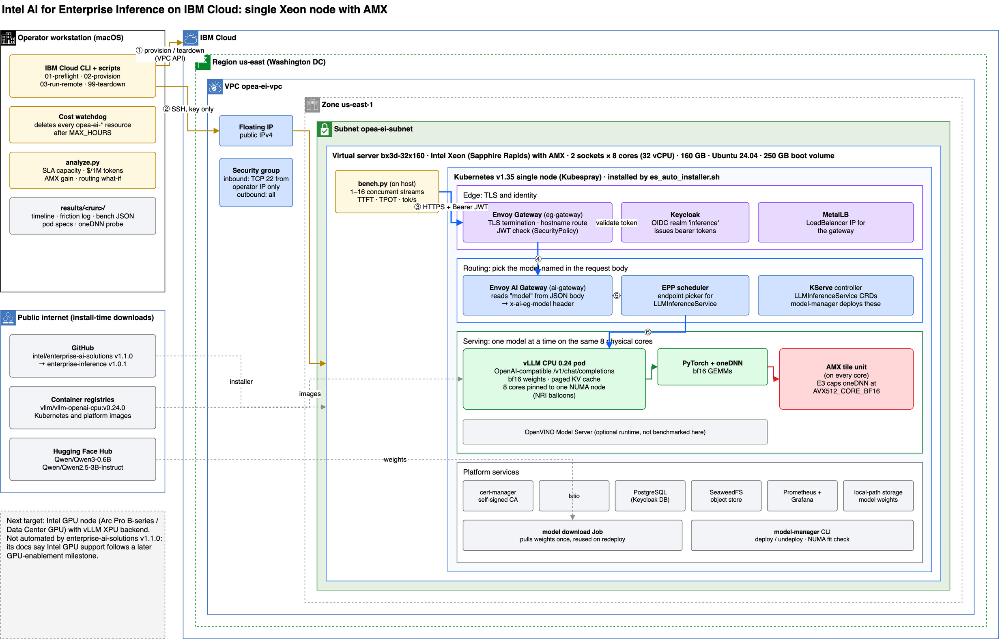

The problem
Teams that move inference onto their own hardware, for cost, privacy, or air-gap reasons, have to answer four questions before they buy anything. I couldn't find published numbers for install time, capacity, or cost on this stack, so I measured them.
How long until it answers?
From an empty machine to an authenticated, OpenAI-compatible endpoint. Where does it break?
How many users per node?
Before latency stops being acceptable.
What does a token cost?
Per million output tokens, at that load.
What is AMX worth?
Same cores, same model, with and without the matrix unit.
The service target was fixed before the run:
What was deployed
One server, single-node Kubernetes, and the full Intel stack. Every benchmark request goes through TLS, a Keycloak JWT check, and model routing before it reaches vLLM: the same gateway and authentication path a client uses.

model from the body) → EPP scheduler → vLLM on 8 NUMA-pinned cores → oneDNN → AMX. Full size · draw.io sourceFrom request to token
Eight steps separate an API call from its first token. The SLA is set by two of them: prefill, which decides time-to-first-token, and decode, which decides how fast tokens stream.
TLS and identity
Envoy Gateway terminates TLS and validates the Keycloak JWT. No token, HTTP 401.
measured: 401 ✓Model routing
Envoy AI Gateway reads "model" from the JSON body and selects that model's route.
Endpoint pick
The EPP scheduler chooses a serving endpoint for the LLMInferenceService.
Admission
vLLM tokenizes the prompt and adds it to the running batch (continuous batching).
~600 prompt tokensPrefill
All prompt tokens go through the model at once. Compute-bound: large bf16 matrix multiplies on AMX tiles.
sets TTFTDecode
One token per step per request, reading weights and the paged KV cache each time. Memory-bandwidth-bound.
sets tokens/s per userStream
Tokens return as server-sent events through both gateways to the client.
OpenAI-compatiblePlacement
Underneath it all, NRI balloons pin the pod to whole cores on one NUMA node, keeping memory local.
8 cores · NUMA 0This is why AMX moves TTFT far more than per-user speed (section 05), and why 8 cores saturate near 217 tokens/s: past that point new users queue for prefill.
Capacity: where one node bends
Throughput climbs until the cores saturate near 217 tokens/s. After that, extra users only wait longer, and time-to-first-token is the first limit to break. One run per configuration; 32 requests per level up to 16 users, 48 above.
Output throughput
tokens per second, all users combined
Time to first token, p95
seconds · shaded area misses the 2 s target
Show data tables
What AMX is worth
With one user, AMX adds little, because decode is limited by memory bandwidth. Under load, prompt processing dominates, and that is compute-bound work for a matrix unit.
Same model, same 8 cores, AMX on vs. off
output tokens/s at each load · the gap is the AMX contribution
AMX on → isa: Intel AMX with bfloat16 and 8-bit integer support · brg_matmul:avx10_1_512_amx
AMX off → isa: AVX-512 with bfloat16 support · brg_matmul:avx512_core_bf16 # ONEDNN_MAX_CPU_ISA=AVX512_CORE_BF16
How 24 vs. 2 was measured: with AMX, every level up to 24 users met the target, and 32 missed it (p95 TTFT 2.31 s). Without AMX, 1 and 2 users met it, and 4 missed it (p95 TTFT 2.15 s). Same model, cores, and prompts. The probe confirms the instruction-set cap took effect in each pod. It does not trace every kernel vLLM ran; the end-to-end throughput and latency gap is the main evidence.
The cost of a token (estimated)
The server costs the same per hour however busy it is, so utilization sets the price of a token. Move the sliders to see how.
Throughput values are measured; every other number on this panel is an estimate built on them. The default rate is an assumed $1.90 per server-hour (IBM's partial billing for the run implies about $2), and the figures hold only for this workload.
Where Xeon fits, from this data
The case for CPU inference is not raw speed. It is serving a known load within a target, on hardware that is already approved, owned, and allowed to see the data.
Good fit
- Small models at interactive load: a 0.6B model, 24 users observed within target on 8 coresmeasured
- Prefill-heavy traffic such as RAG, summarization, and classification, where AMX matters mostmeasured: 3.1×
- Private deployments: the model runs on your own server behind one authenticated, OpenAI-compatible endpointdemonstrated
- Fleets that already run Xeon: inference capacity without a new accelerator procurementjudgment
Needs more cores or an accelerator
- 3B+ models for interactive users on a few cores: 5.2 tokens/s for one user against a target of 10measured
- Loads past the saturation point: beyond ~30 users on 8 cores, throughput stops rising and latency climbsmeasured
- Large models at high throughput, where an accelerator's memory bandwidth decides the outcomejudgment
- Untested here: more cores per replica, tensor parallelism across both sockets, INT8 or OpenVINO INT4next runs
The deployment, minute by minute
The install itself was solid: 468 Ansible tasks, none failed, 49 pods healthy, 0 restarts. The remaining minutes went to six small things, each with a simple fix.
Bare server to first correct answer
What worked as designed: NRI balloons pinned each model to whole cores on one NUMA node; pre-flight refused placements that would spill onto hyperthread siblings; the AI gateway routed by the model field with no per-model configuration.
Routing: a scenario, not a router
If a router sent easy requests to the small model, the blended price would drop sharply. This is arithmetic on measured peak throughput. No router was built, so the saving still needs quality evaluation and routing validation.
Blended cost by share of traffic sent to the 0.6B model
$ per 1M output tokens; the rest goes to Qwen2.5-3B
Before claiming the saving, an evaluation set has to show that the small model handles that share of real traffic acceptably.
What to build next
Ranked by how much each would cut the time and expertise a new team needs to reach a trusted, measured endpoint.
A one-command evaluation path
Single-node install that never prompts, validates each component without aborting, and ends by printing a working curl. Removes the prompt and manual checks, which cost about 16 minutes of this run. Getting under 15 minutes would also need a prebuilt image or pre-pulled containers, because the install step alone took 25 minutes.
An SLA report built into model-manager
model-manager bench --sla ttft=2s,tps=10: sweep concurrency, report capacity, TTFT, TPOT, and cost per million tokens, and export to the existing Grafana. The numbers on this page took a separate load generator to produce.
A capacity planner
Given a model and an SLA, recommend cores, replicas, and tensor parallelism. NRI pre-flight already knows the free cores per NUMA node; benchmark data supplies tokens/s per core.
SLA-aware routing in the AI gateway
The gateway already routes on the model field. Add a policy that sends a request to the smallest model that passes an evaluation set for its task, then measure the real saving against the 60% scenario in section 09.
Limits, and how to rerun it
- One server and one run per configuration, so run-to-run variance has not been measured.
- The load generator ran on the same server. The model's cores were pinned; the client's were not.
- Lab-only TLS: the gateway used the installer's self-signed certificate, and the load generator skipped certificate checks. Production clients must verify against the installed CA (
bench.py --cacert) or a real certificate. - Connected install: air-gapped deployment was not tested.
- Scope is Xeon only. Intel accelerators (Gaudi 3 is available on IBM Cloud in 8-accelerator servers) are candidates for a follow-up run.
ibmcloud login --sso ./01-preflight.sh # read-only checks CONFIRM=yes ./02-provision.sh # server + 4-hour auto-delete watchdog ./03-run-remote.sh && ./03-run-remote.sh collect python3 analyze.py results/<run> --usd-per-hour <rate> CONFIRM=yes ./99-teardown.sh # ends with a zero-leftovers check
About two hours of server time, about $4 at $1.90 to $2 per hour (run 1 used 1.5 hours, about $2.83). The operator log records every action from run 1, including failures and fixes.